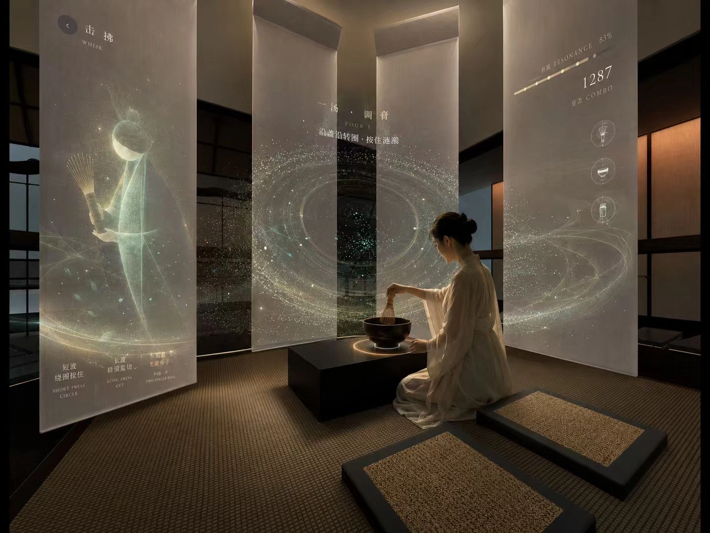
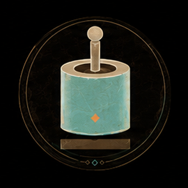
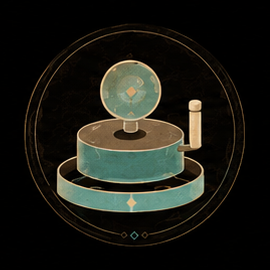
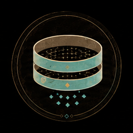
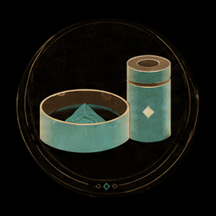
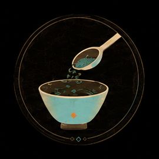
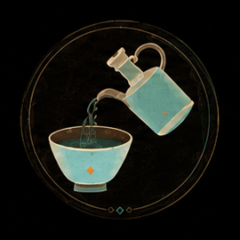
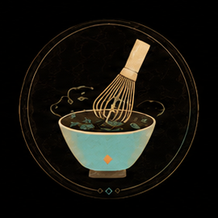
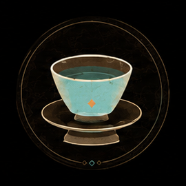

径山寺：从场域到茶宴
文化溯源、实地观察与器物考察，构成茶事体验的依据。
场景观察
- 空间格局
- 自然环境
- 日常行为
- 人文活动
器物考察
点茶为何不能像咖啡拉花一样
有趣又日常？
从径山寺茶宴出发，把文化知识放回真实的动作、器物与声音之中。
茶宴的程序，成为入席的线索
- 张茶榜 输入ID
- 击茶鼓 游戏开始
- 恭请入堂
- 煎汤点茶
- 行盏分茶
- 说偈吃茶
- 茶宴程序
- 身体与礼仪
- 点茶工序
- 节奏与操作
- 茶具形制
- 角色与展具
一盏茶的八个动作
-

碎茶 -

碾茶 -

罗茶 -

茶末置盒 -

撮末于盏 -

点茶 -

搅拌茶沫 -

置茶托
以茶为弦，以器为谱
以器为谱
以身为律
以纹成记
把茶事，谱成四段游戏
声音、手作、身体与击拂依次进入体验；每关保留从草图到界面的完整设计过程。
醒茶如禅
听辨节拍，依次采集茶芽，收集茶音。
玩法与界面
碾罗成律
通过滑动、碾磨与过筛，把手作节奏转成音粒。
玩法与界面
行盏入礼
以身体动作完成叉手、持盏、转身与奉茶。
玩法与界面
身体动作图解
叉手
持盏
奉茶
击拂斗弦
用茶筅接住水纹，与十二茶先生完成击拂合奏。
玩法与界面
把击拂的分寸，变成游戏规则
接住、猛切与停手各有时机。动作改变茶沫状态，也改变音乐中的反馈。
从茶粉状态进入击拂
绕圈，在盏沿接住涟漪
长波停留时持续击拂
停手等待，避开红波
查看原始机制矢量草图
器物有了自己的角色
从器物的轮廓提取冠、衣与姿态，让十二茶先生成为认识茶具的入口。
茶筅的细密线条，延伸成冠。
汤瓶的曲线，展开为衣。
茶盏的轮廓，成为捧茶的姿态。
器物、角色与茶宴的关系
器物与人物剪影的视觉探索
从通关，到角色与徽章收藏
十二茶先生 · 解锁状态图解
按原稿的三位点亮、九位待解锁状态重排，补全原板下沿未完整展示的卡面。
加载图标探索
四重境界，组织一场茶文化体验
- 叙事
- 采茶体验
- 采、识、器、像
- 情感
- 茶叶碾罗体验
- 劳作共情与手作温度
- 美学
- 茶宴 · 分茶
- 气、场、虚、实
- 场景
- 茶室空间
- 茶席雅集、茶道展演、静心品茗
让整间茶厅，回应你的动作
空间效果、身体交互与反馈画面并置，呈现三段体验如何被参与。
醒茶如禅 · 交互演示
碾罗成律 · 交互演示
行盏入礼 · 交互演示
从游览，到驻留与入席
环形动线连接观看、停留与交互。中央的围合茶室，让击拂成为空间中的体验核心。
在空间里发生的六种行为
- 入口引导
- 由入口进入环形动线
- 漫步体验
- 沿路径展开游览
- 观景借景
- 透过框景观看层次
- 观赏展品
- 在器物前驻足
- 沉浸感受
- 在围合茶室中入席
- 互动体验
- 用茶筅与茶盏参与击拂
- 游览
- 驻留
- 入席
- 交互
击拂茶室：与茶先生对弈
中央围合茶室以宋代点茶工序为线索，茶盖、茶筅与纱幕共同构成交互界面。
动作与感官反馈
- 茶筅转动频率
- 纱幕星纹光影
- 杯盖与杯壁的触碰
- 即时声音与光环反馈
- 采茶、碾罗、行盏、击拂
- 交织成完整的茶乐曲
- 与十二茶先生对弈
- 按游戏行为评分，判定胜负
围合茶室的中央席位
茶筅与茶盏的交互位置
展具语言与陈列系统
- 圆
- 流动
- 方
- 秩序
- 格栅
- 层次
- 层架
- 递进
- 围合
- 范围
- 对景
- 对话
展具系统分析
把展厅里的茶，带回日常
从《茶具图赞》提取镂空图样，获胜后取得对应茶先生的徽章茶模。
沿模卡绘制茶百戏，吸取杯盖中的清水作为笔液。
按游戏绘制个数获得不同绿色程度的茶杯，并与一次性茶包装组成奖励。
- 奖励吸管笔
- 奖励茶杯
- 攻关徽章
- 临摹茶百戏
- 畅饮礼品
从游戏奖励到茶饮体验
草图推演：从空间到展具
六种展具方向
完整设计展板
文化研究、游戏系统、空间与器物的完整记录。
为什么做
我参与茶弦记，是想让点茶从被观看的传统，变成手里真正完成的一件事。
从中学到
在茶具、动作、节奏与展厅之间反复对照后，我更清楚如何让数字反馈服务真实材料，而不是代替它。